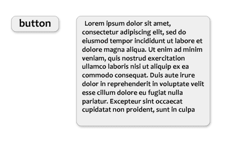

Methodology abvCSS
Project architecture
According to abvCSS methodology, all styles are divided into 4 categories:
- Base.
- Layout.
- Blocks.
- Skins.
body {
font-family: Arial;
background-color: #fff;
color: #0e0e0e;
}
a {
color: #1894c4;
}
a:hover {
color: #df2e30;
}You do not need to use !important modifier or other selectors in base styles.
It is good to use popular library normalize.css in this category.
Layout - layout styles. This type of styles should be applied to the structural blocks that are used on the page once.
It is header, footer, menu, sidebar etc.
In this way, you should use id selectors. Typical example of layout styles:
#container {
display: grid;
grid-template-columns: auto 900px 99px auto;
grid-template-rows: 200px auto auto 200px;
grid-template-areas:
"header header header header"
" . menu menu . "
" . content sidebar . "
"footer footer footer footer";
}
#header {
grid-area: header;
}
#content {
grid-area: content
}id selectors can be used as nested or child selectors like this:
.tablet #content {
display: block;
padding: 10px 20px;
}
@media screen and (max-width: 375px) {
#content {
display: block;
padding: 5px 15px;
}
}Blocks - styles of reusable blocks. Usually they are buttons, paragraphs, titles, galleries etc. To design that elements you need to use class selectors.
abvCSS blocks are fully consistent with blocks of BEM methodology. To learn BEM blocks visit this page.
In this way, you should follow the next rules:
block-name__elem-name_mod-name_mod-val
- Names are written in lowercase Latin letters.
- Words are separated by a hyphen (-).
- The block name defines the namespace for its elements and modifiers.
- The element name is separated from the block name by a double underscore (__).
- The modifier name is separated from the block or element name by a single underscore (_).
- The modifier value is separated from the modifier name by a single underscore (_).
- For boolean modifiers, the value is not included in the name.
Elements of elements do not exist in the BEM and abvCSS methodologies. The naming rules do not allow creating elements of elements, but you can nest elements inside each other in the DOM tree.
.header {
width: 100%;
height: 100%;
box-sizing: border-box;
max-width: 900px;
margin: 0 auto;
}
.header__logo {
display: inline-block;
height: 100px;
width: 400px;
}
.header__github {
float: right;
margin-top: 40px;
margin-right: 15px;
color: #fff;
}
.header__github_dark {
color: #0e0e0e;
}Unlike BEM, it is fine for abvCSS to separate appearance styles in other class.
Skins - skinning styles. Skins are styles that describe appearance of the elements.
This styles include text color, background color, shadow, rounded corners, decoration style etc.

For example, you can notice common decoration of blocks on the picture above: black text color, grey background, grey borders and shadow.
It is effective to add that styles to Skin class.
To recognize Skin classes and Blocks classes, all Skin classes begin with a capital letter.
.Grey-skin {
color: #0e0e0e;
background-color: #eee;
border: 1px solid #ccc;
box-shadow: 2px 2px 3px #ddd;
border-radius: 4px;
}
.Dark-skin {
color: #fff;
background-color: #0e0e0e;
border: 1px solid #999;
border-radius: 4px;
}Due to Skin classes, CSS code is reduced, you can also dinamically change design theme of the page.
DOM classes rules
According to abvCSS, DOM classes should match this formula:
[Skin_class_1 [Skin_class_2 […]]] [block_class_1 [block_class_2]] [element_class] [modifier_class_1 [modifier_class_2 […]]]
You need to follow the next rules:
- There are Skin classes from the beginning (with a capital letter).
- Then it is Block class (or two classes for the Mix) or Element class.
- Finally, there are some Modifier classes.
It is typical div block of abvCSS methodology:
<div class="Adaptive Dark-skin list list_big">
...
</div>Framework abvCSS
While installing abvCSS framework it is creating directories and files for abvCSS methodology.
You will also be able to add normalize.css.
To transform styles we use PostCSS with plugins postcss-preset-env, rucksack-css,
cssnano and css-mqpacker.
Webpack bundles all this resources.
Installing
For installing abvCSS framework you must have Node.js platform.
Install Yeoman:
npm install -g yoInstall generator abvcss:
npm install -g generator-abvcssIn empty folder launch abvCSS installing:
yo abvcssThen you should answer some questions about configuration.
After this, there will be a project with the following structure:
project
├── index.html
├── LICENSE
├── package.json
├── README.md
├── webpack.common.js
├── webpack.dev.js
├── webpack.prod.js
└── abvcss
├── 1-base
├── 2-layout
├── 3-blocks
├── 4-skins
├── _placeholder-classes.sass
├── _settings.sass
└── style.sassYou can bundle the project in two modes.
Development mode:
npm run build:devProduction mode:
npm run build:prodAfter bundling visit dist folder and find main.css file. You can attach this file to a web page.
All sources are located in 1-base, 2-layout, 3-blocks, 4-skins directories. Module settings
includes preprocessor variables and other settings.
abvCSS + React
React - one of the most popular frameworks for creating dynamic user interfaces. It is fully compatible with the abvCSS framework.
This bundle allows you to use the most advanced frontend technologies for today.
If you use such a cssinjs framework as styled-components, you probably will not need to write Blocks styles.
To install abvCSS + React starter, follow these steps:
Install Yeoman (if you have not already done so):
npm install -g yoInstall generator abvcss+react:
npm install -g generator-abvcss-reactIn empty folder launch abvcss+react installing:
yo abvcss-reactThen you should answer some questions about configuration.
After this, there will be a project with the following structure:
project
├── index.html
├── LICENSE
├── .babelrc
├── package.json
├── README.md
├── webpack.common.js
├── webpack.dev.js
├── webpack.prod.js
├── src
│ └── index.jsx
└── abvcss
├── 1-base
├── 2-layout
├── 3-blocks
├── 4-skins
├── _placeholder-classes.sass
├── _settings.sass
└── style.sassYou can bundle the project in two modes.
Development mode:
npm run build:devProduction mode:
npm run build:prodAfter bundling visit dist folder and find main.css and main.js files. You can attach this files to a web page.